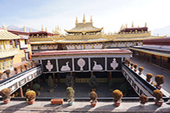

In January 2016,
I went solo on a 3-day trip to Lhasa,
Tibet. Tibet is a place I had always had a fascination with and wanted to visit since I was a child. It’s definitely worth more than a 3 day trip,
but my available time was short and I didn’t want to let that stop me.
I expected Lhasa to have retained more of the traditional Tibetan vibe that I had my head,
the exotic image that had played in my head for years. So,
at first I was a little disillusioned by all of the modernization and development.
Distance
The distance from my town of Pittsburgh,
Pennsylvania to Lhasa,
Tibet is 7,
556 miles.
Lhasa is actually only the 2nd most distant place I've been to. I've also been to Kathmandu,
Nepal,
which is further (7629 miles),
on another trip. That's a long way, but its stil less than 1/3 of the way completely around the world.
Temples

Lhasa is the site of a number of historic monasteries and temples. It's one of the few large cities in Tibet but it's a small city by American standards. It's more equivalent to a large town.
People
The people were a mix of ethnic Tibetans and Chinese. I didn’t get to observe the people much other than to just see them going about their daily business There were many Chinese police around to keep watch on everything. It was not the tourist season,
so I was one of the few Westerners around. It coincided with pilgrimage,
so there will pilgrims from far away.
Food
A very popular food are momos,
a type of dumpling,
often filled with meat. The ones I had were filled with yak meat. The noodle soup I had for breakfast also included yak meat. Yak meat is very prevalent. It is the most popular meat,
kind of the equivalent of beef,
but without the competition that beef has in the United States. Tibetans are very reliant upon it. Another traditional breakfast is barley porridge,
which I gave a pass. There were some dishes available with vegetables including potatoes,
but i was left with the impression that noodles,
dumplings,
soup,
and yak were the main staples. Unfortunately,
time was short and on this trip I didn’t have any butter tea ... a preparation of tea which is made with,
you guessed it,
yak butter.